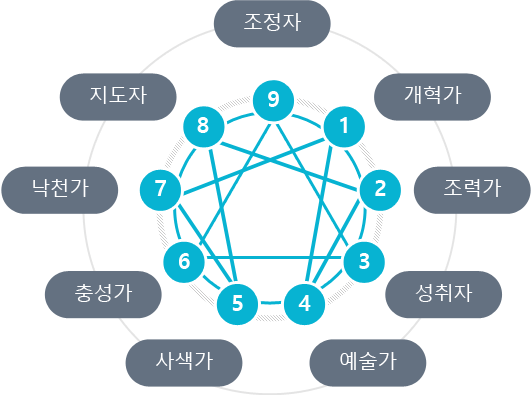

에니어그램은 아홉 가지로 이루어진 인간 성격 유형과, 그 유형들의 연관성을 표시한 기하학적 도형이다.
에니어그램에서 말하는 가장 중요한 점은 인간이 육체를 입고 물질 세계에 태어난 영적 존재라는 것이다. 에니어그램은 모든 영적인 길의 가장 기본적인 요소인 ‘자기 인식’에 관한 것이다. 진정한 자기 인식은 자기기만으로부터 우리를 보호한다. 에니어그램은 진정한 우리 자신으로부터 시작된다. 물질 세계에서 영적인 존재로 살아가기를 원한다면 우리는 자신을 탐색해야 한다.
에니어그램과 함께하는 자기 탐색은 자기 유형을 찾고 그 유형에서의 주된 문제를 이해하는 데에서 시작한다. 우리는 이 아홉 가지 유형에서 자신의 행동을 발견할 수 있다. 이 유형들 중 하나가 우리 행동의 가장 근본이 된다.
- 당신이 어떤 유형이든지 당신 안에는 어느 정도 아홉 가지 유형이 모두 내재되어 있다.
그 유형들을 탐색하고 자신 안에서 어떻게 작용하는지 알게 됨으로써 당신은 인간 내면의 전체 스펙트럼을 이해할 수 있다.
당신 안에 내재된 아홉 가지 유형을 탐색해 보면 그 유형들이 어떻게 연관되어 있는지 알게 된다.
에니어그램의 상징도 바로 이러한 연관성을 나타내준다
- 모든 사람에게는 여러 성격 유형이 혼합되어 나타나기는 하지만, 특정 패턴의 기본적인 성격 유형을 갖고 있기 때문에 결국은 그 기본 성격 유형으로 돌아간다.
사람들은 변화하고 수많은 방식으로 발전되지만 한 가지 기본 성격 유형에서 다른 유형으로 옮겨 가지는 않는다.